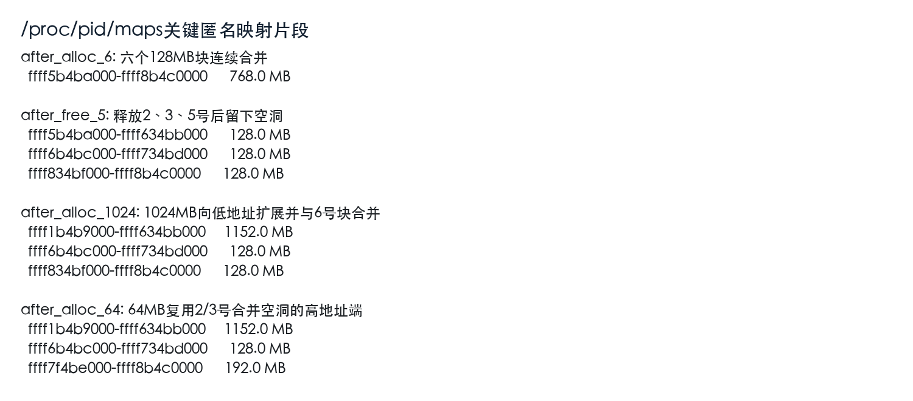
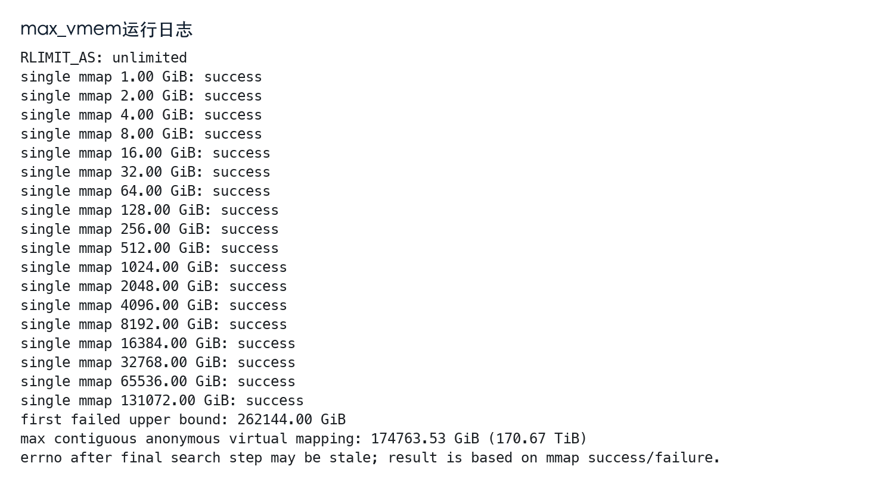
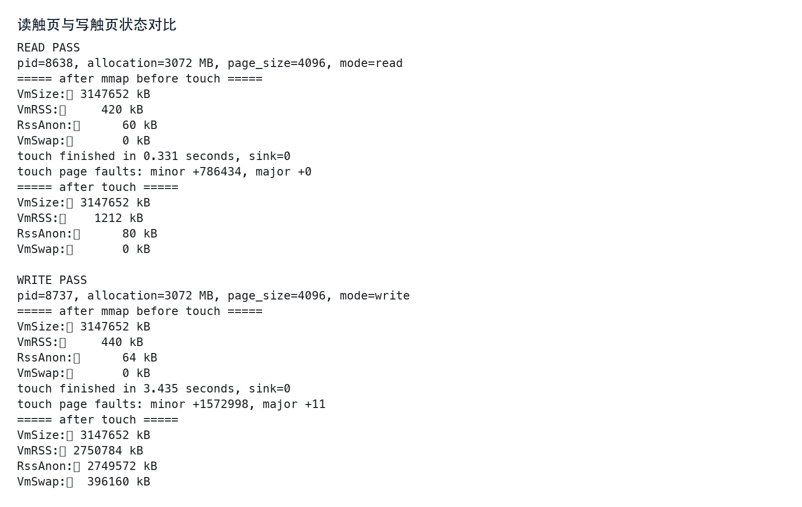
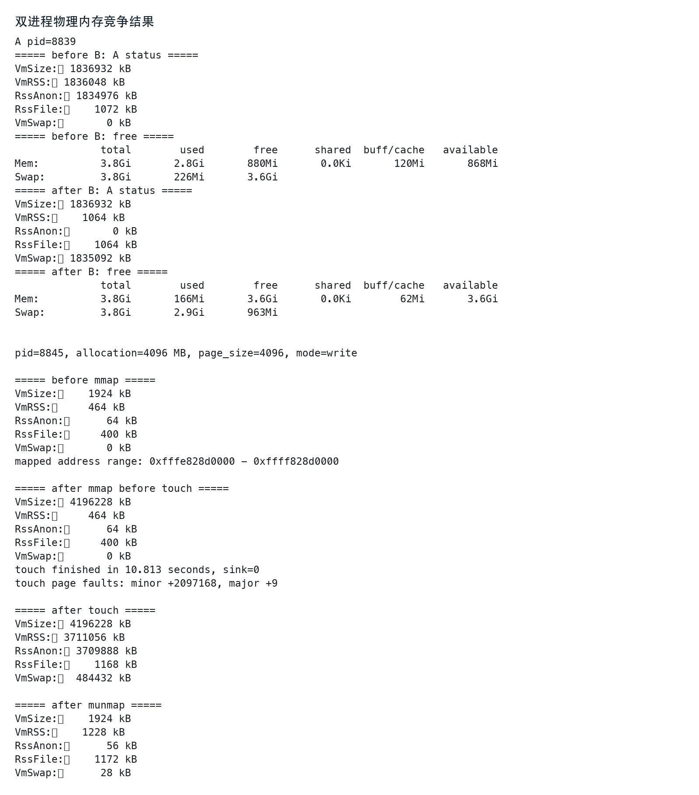
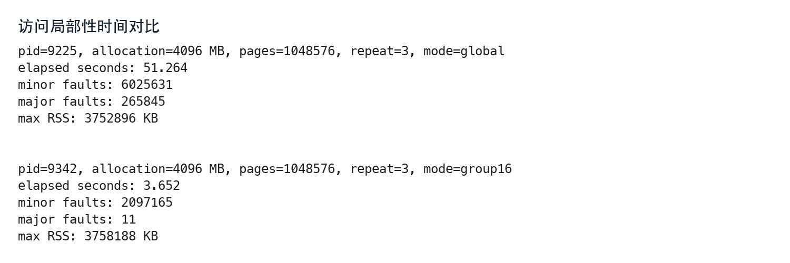

你要在实验课上证明什么
这次实验不是背概念，而是现场证明：Linux给进程的是虚拟地址空间；虚拟空间可以先申请、后触页；读触页和写触页的物理内存效果不同；多个进程会竞争物理页；访问局部性会显著影响页面置换次数和运行时间。
概念定义索引
下面这些卡片是全文的“回跳定义”。后面正文里蓝底加粗的概念都可以点击回来，例如 VMA、VmSize、RssAnon。如果你验收前脑子乱了，就先回到这里把概念重新对齐。
虚拟内存 / 虚拟地址空间
进程看到的一套“自己的地址地图”。它不是物理内存条地址，而是 CPU 通过页表翻译后才能访问真实物理页。
实验抓手：VmSize、maps 地址范围。
VMA
Virtual Memory Area，进程虚拟地址空间中的一段连续区间。每段 VMA 有权限、来源和起止地址。
实验抓手：/proc/<pid>/maps 每一行就是一个 VMA。
页 / 4KB页
Linux 内存管理的基本粒度。你的虚拟机页大小为 4096 字节，所以实验按 off += page 逐页访问。
实验抓手：getconf PAGE_SIZE、sysconf(_SC_PAGESIZE)。
页表
把虚拟页映射到物理页框的数据结构。程序访问指针时，CPU 依赖页表完成地址翻译。
实验抓手：读/写触页后缺页次数和 RSS 变化。
缺页异常
访问的虚拟页还没有可用页表项，或者权限不满足时，CPU 进入内核处理。
实验抓手：minor faults 与 major faults。
共享零页
匿名页首次读时，内核可以让很多虚拟页暂时指向同一个只读的全零物理页。
实验抓手：3GB 读触页后 RssAnon 几乎不变。
VmSize
进程名义上拥有的全部虚拟地址空间，包括代码、库、堆、栈、匿名映射等。
一句话：地图上登记了多少房间。
VmRSS / RSS
当前真实驻留在物理内存里的页面总量。它通常小于 VmSize。
一句话：现在真的开灯、有人在用的房间。
VmData
数据段、堆、匿名映射等可读写数据区规模。大块 malloc/mmap 常常会反映在这里。
实验抓手：128MB、1024MB 申请后明显增长。
RssAnon
匿名页中当前还驻留在物理内存里的部分，例如堆、匿名 mmap、栈。
一句话：我的私人页面现在还在桌面上。
VmSwap
匿名页被换出到 swap 的大小。虚拟地址还在，但对应物理页暂时不在内存中。
一句话：私人页面被收进硬盘抽屉。
/proc/pid/maps
显示进程每段 VMA 的地址范围、权限、文件偏移、设备号、inode 和路径来源。
实验抓手：判断 64MB 是否复用释放空洞。
/proc/pid/status
显示进程状态摘要。内存相关字段包括 VmSize、VmRSS、VmData、RssAnon、VmSwap 等。
实验抓手：快速比较每一步总体内存变化。
/proc/pid/smaps
比 maps 更细，会把 RSS、脏页、共享/私有页等信息拆到每段 VMA 下面。
实验抓手：当老师追问“这一段到底占没占物理页”。
mmap / munmap
mmap 建立虚拟映射，munmap 释放映射。大块 malloc 背后常用匿名 mmap。
实验抓手：大块地址区间、最大虚拟映射、3GB/4GB 测试。
MAP_NORESERVE
告诉内核不要提前为映射预留 swap 承诺。适合只测试虚拟地址空间上限。
实验抓手：max_vmem.c 测得 170.67 TiB。
Swap
磁盘上的交换区。物理内存压力大时，不活跃匿名页可以被写入 swap，腾出物理页框。
实验抓手：双进程竞争后 A 的 VmSwap 上升。
工作集 / 局部性
短时间内频繁访问的页面集合。工作集越小、越集中，页面越可能还留在物理内存中。
实验抓手：global 51.264s，group16 3.652s。
零基础心智模型
如果你只记一张图，就记下面这条链：C程序申请地址 → 内核建立 VMA → 页表 暂时不一定有物理页 → 第一次读/写触发 缺页异常 → 内核决定映射 共享零页、分配物理页或换入换出。
程序拿到一个虚拟地址范围。
内核记录这段地址能否读写、从哪里来。
虚拟页到物理页框的翻译表。
第一次访问时进入内核处理。
真正留在物理内存里的页。
物理内存不够时被换出的匿名页。
1. 虚拟内存不是物理内存
你在C语言里看到的指针，例如0xffff834bf010，不是内存条上的真实位置，而是进程自己的 虚拟地址空间 中的地址。CPU访问这个地址时要查 页表，页表再告诉CPU对应哪个物理页框。
2. VMA是Linux管理虚拟地址空间的基本形态
/proc/<pid>/maps里的每一行就是一段 VMA。它会告诉你这段地址的范围、权限和来源。匿名大块内存通常长这样：
ffff5b4ba000-ffff8b4c0000 rw-p 00000000 00:00 0这行没有文件名，权限是rw-p，说明它是私有匿名可读写映射。我们的六个128MB块最初就合并成了这样一段768MB匿名 VMA。
3. status字段要这样看
| 字段 | 你要怎么解释 | 本实验怎么看 |
|---|---|---|
VmSize | 进程拥有的虚拟地址空间总量。 | malloc/mmap后立刻变大。 |
VmData | 数据段、堆、匿名映射等数据区规模。 | 大块匿名映射主要反映在这里。 |
VmRSS | 当前驻留在物理内存中的总页数。 | 读触页几乎不涨，写触页明显上涨。 |
RssAnon | 匿名页实际驻留物理内存的部分。 | 判断写触页是否真的分配物理页。 |
VmSwap | 匿名页被换出到swap的规模。 | 双进程竞争和3GB写触页时会升高。 |
4. 一句话区分读触页和写触页
PPT知识如何落地到这次实验
我没有在当前目录附近找到你的PPT文件夹，所以这里按操作系统内存管理课件通常会讲的主线来对齐。你上课听过的概念，在实验里对应到下面这些命令和指标。
| PPT里的概念 | 实验里的证据 | 验收时说法 |
|---|---|---|
| 连续/离散分配 | maps中多个 VMA 分散在不同地址段。 | 用户虚拟空间以VMA为单位离散管理；单个VMA内部连续，整体不必连续。 |
| 分页存储管理 | 访问步长固定为4096字节。 | 4KB页是本机基本页大小，逐页访问能触发页级行为。 |
| 虚拟存储器 | 最大映射约170.67TiB，远大于3.8GiB物理内存。 | 虚拟地址空间大小不等于物理内存大小。 |
| 缺页中断 | minor faults和major faults变化。 | 读写触页都会触发 缺页，但处理路径不同。 |
| 页面置换 | A进程 RSS 下降、Swap 上升。 | 物理页被B挤占后，A的匿名页被换出。 |
| 局部性原理 | global 51.264s，group16 3.652s。 | 访问总量不变，局部性改变主缺页次数和运行时间。 |
环境准备
你验收时有两种做法：直接在虚拟机终端操作，或从宿主机SSH进虚拟机。你当前环境已经能用SSH进入Ubuntu。
1. 进入Ubuntu虚拟机
ssh 192.168.64.5如果老师要求在虚拟机界面里操作，就打开UTM里的Ubuntu终端，命令完全相同，只是不用ssh。
2. 进入实验目录
cd ~/exp3
pwd
ls -lh3. 编译四个程序
gcc -Wall -Wextra -O0 -g -o vm_layout vm_layout.c
gcc -Wall -Wextra -O2 -g -o max_vmem max_vmem.c
gcc -Wall -Wextra -O2 -g -o touch_pages touch_pages.c
gcc -Wall -Wextra -O2 -g -o locality_compare locality_compare.c文件地图
| 文件 | 作用 | 验收时展示 |
|---|---|---|
vm_layout.c | 连续分配六个128MB、释放2/3/5、再分配1024MB和64MB。 | logs/vm_layout.log和snapshots/*.maps |
max_vmem.c | 用mmap测试单进程最大连续虚拟映射。 | logs/max_vmem.log |
touch_pages.c | 3GB读触页、写触页、保持映射给另一个进程观察。 | touch_read_3072.log、touch_write_3072.log |
locality_compare.c | 全空间循环与16页分组访问对比。 | locality_global_4096x3.log、locality_group16_4096x3.log |
snapshots/ | 每一步保存的maps和status。 | 用less或grep查看关键地址段。 |
figures/ | 报告和本页面用的结果图。 | 验收时可辅助展示结果。 |
代码能力总览
这部分先给你一张“代码能力地图”。真正的详细代码讲解已经合并到下面每个任务里；你可以先看这里建立整体感，再跳到具体任务逐行理解。
0. 先把整个实验拆成四类代码能力
| 能力 | 用到的Linux接口 | 解决哪个实验问题 |
|---|---|---|
| 读取进程内存状态 | /proc/<pid>/status、/proc/<pid>/maps | 证明VmSize、VmRSS、VMA布局怎么变。 |
| 申请和释放虚拟地址空间 | malloc/free、mmap/munmap | 制造128MB、1024MB、3GB、4GB这些实验对象。 |
| 按页访问内存 | sysconf(_SC_PAGESIZE)、按4096字节步进 | 触发缺页，区分“只申请”和“真正访问”。 |
| 统计时间和缺页次数 | clock_gettime、getrusage | 解释读写触页、页面置换和局部性的性能差异。 |
1. 第一个公共工具：从/proc读status
写实验代码时，第一步不是分配内存，而是先让程序自己会“汇报状态”。/proc/<pid>/status本质上是一个文本文件，所以C代码就是打开文件、逐行读取、筛选你关心的字段。
static void print_status_summary(const char *label) {
printf("\n===== %s =====\n", label);
char path[128];
snprintf(path, sizeof(path), "/proc/%d/status", getpid());
FILE *fp = fopen(path, "r");
if (!fp) {
perror(path);
exit(1);
}
char line[256];
while (fgets(line, sizeof(line), fp)) {
if (strncmp(line, "VmSize:", 7) == 0 ||
strncmp(line, "VmRSS:", 6) == 0 ||
strncmp(line, "RssAnon:", 8) == 0 ||
strncmp(line, "VmSwap:", 7) == 0) {
fputs(line, stdout);
}
}
fclose(fp);
}getpid()拿到当前进程PID，snprintf拼出/proc/当前PID/status路径，strncmp只筛出关键字段。这个函数是后面所有实验现象的观察窗口。2. 第二个公共工具：复制maps/status快照
只在屏幕上打印不够，因为实验报告和验收都需要前后对比。所以vm_layout.c多写了一个复制文件的函数，把每一步的maps和status保存到snapshots/。
static void copy_proc_file(const char *proc_name, const char *label) {
char src[128];
char dst[256];
snprintf(src, sizeof(src), "/proc/%d/%s", getpid(), proc_name);
snprintf(dst, sizeof(dst), "snapshots/%02d_%s.%s", snapshot_id, label, proc_name);
FILE *in = fopen(src, "r");
FILE *out = fopen(dst, "w");
char buf[4096];
size_t n;
while ((n = fread(buf, 1, sizeof(buf), in)) > 0) {
fwrite(buf, 1, n, out);
}
fclose(in);
fclose(out);
}这样每次调用snapshot("after_alloc_6")，你就同时得到屏幕输出和可保存的after_alloc_6.maps证据。
3. vm_layout.c：先写“能制造地址布局变化”的程序
这个程序的核心思想是：每做一次内存操作，立刻拍一张/proc快照。也就是“操作之前拍一次、操作之后再拍一次”。
| 写代码顺序 | 为什么这样写 |
|---|---|
定义BLOCKS=6和MB | 让128MB、1024MB、64MB这些规模写得清楚。 |
准备void *p[6] | 保存六次malloc返回的地址，后面才能精确释放2、3、5号块。 |
每次malloc(128 * MB) | 制造六个大块匿名映射。 |
memset(p[i], 0, 4096) | 至少触碰第一页，确保这块内存真的被访问过；不写满128MB是为了避免实验变慢。 |
free(p[1])、free(p[2])、free(p[4]) | 对应释放第2、3、5块，制造地址空洞。 |
再malloc(1024MB)和malloc(64MB) | 观察大块和小块分别会被放到哪里。 |
void *p[6] = {0};
const size_t block_size = 128 * MB;
for (int i = 0; i < 6; ++i) {
snapshot("before_alloc");
p[i] = malloc(block_size);
if (!p[i]) {
perror("malloc 128MB");
return 1;
}
memset(p[i], 0, 4096);
printf("block[%d] = %p\n", i + 1, p[i]);
snapshot("after_alloc");
}status和maps，用VmSize证明虚拟空间变化，用maps证明VMA合并、拆分和空洞复用。4. max_vmem.c：再写“只测试虚拟地址上限”的程序
如果用malloc测试最大内存，很容易受到分配器元数据、系统overcommit、物理内存压力影响。这里要测的是“最大连续虚拟地址范围”，所以直接用mmap，并且故意不分配物理页。
static int try_map(unsigned long long bytes) {
void *p = mmap(NULL, (size_t)bytes, PROT_NONE,
MAP_PRIVATE | MAP_ANONYMOUS | MAP_NORESERVE, -1, 0);
if (p == MAP_FAILED) {
return 0;
}
munmap(p, (size_t)bytes);
return 1;
}| 参数 | 含义 | 为什么需要 |
|---|---|---|
PROT_NONE | 这段地址暂时不可读不可写 | 只占地址范围，不触发真实读写。 |
MAP_ANONYMOUS | 不对应文件 | 测试匿名虚拟映射。 |
MAP_NORESERVE | 不预留swap承诺 | 避免因为物理内存或swap不足而过早失败。 |
munmap | 立刻释放 | 每次只是试探，不让多次试探互相占地址。 |
搜索方法分两步：先不断翻倍找“第一次失败的上界”，再在成功值和失败值之间二分查找最大成功值。
unsigned long long low = 0;
unsigned long long high = 1ULL * GiB;
while (try_map(high)) {
low = high;
high <<= 1;
}
while (high - low > page) {
unsigned long long mid = low + (high - low) / 2;
mid -= mid % page;
if (try_map(mid)) {
low = mid;
} else {
high = mid;
}
}mid -= mid % page。最终测到的170.67TiB是“能保留的虚拟地址范围”，不是物理内存。5. touch_pages.c：写出“读触页”和“写触页”的差别
这个程序要抓住一个关键：mmap之后只是有了虚拟地址，只有访问每个页，才会触发缺页处理。所以代码必须按页大小步进，而不是按字节连续访问。
size_t len = mb * MB;
size_t page = (size_t)sysconf(_SC_PAGESIZE);
unsigned char *buf = mmap(NULL, len, PROT_READ | PROT_WRITE,
MAP_PRIVATE | MAP_ANONYMOUS, -1, 0);
if (strcmp(mode, "read") == 0) {
for (size_t off = 0; off < len; off += page) {
sink ^= buf[off];
}
} else if (strcmp(mode, "write") == 0) {
for (size_t off = 0; off < len; off += page) {
buf[off] = (unsigned char)(buf[off] + 1);
}
}volatile sink：读循环如果只是buf[off];，编译器可能认为结果没用，把读取优化掉。把值异或进volatile变量，可以强迫程序真的读内存。buf[off] + 1：写匿名页会触发写时分配，内核必须给这个虚拟页一个私有物理页，所以RssAnon会上升。为了让结果能量化，程序在触页前后调用getrusage统计缺页次数，并用clock_gettime计时。
struct rusage before;
getrusage(RUSAGE_SELF, &before);
double t0 = now_seconds();
/* read loop or write loop */
double t1 = now_seconds();
print_usage_delta("touch", &before);
printf("touch finished in %.3f seconds\n", t1 - t0);6. write-hold模式：让另一个进程有时间挤掉它
提高部分需要两个进程竞争物理页。如果A进程写完就退出，老师还没来得及观察它的/proc/A/status，所以加了write-hold模式：写完以后睡一段时间，保留映射。
if (strcmp(mode, "write-hold") == 0 && hold_seconds > 0) {
printf("holding mapping for %d seconds; inspect /proc/%d/status now.\n",
hold_seconds, getpid());
sleep((unsigned int)hold_seconds);
print_status_summary("after hold");
}这个功能本身很简单，但实验意义很强：A睡着不访问，B大量写内存，内核就更倾向于把A的不活跃匿名页换出。
7. locality_compare.c：只改变访问顺序，不改变访问总量
局部性实验最容易写错。公平比较的关键是：两种模式访问同一块4GB空间、每个页都写、总重复次数一样，唯一差别是访问顺序。
global模式
for (int r = 0; r < repeat; ++r) {
for (size_t page = 0; page < pages; ++page) {
buf[page * page_size]++;
}
}group16模式
for (size_t base = 0; base < pages; base += 16) {
size_t end = base + 16;
if (end > pages) {
end = pages;
}
for (int r = 0; r < repeat; ++r) {
for (size_t page = base; page < end; ++page) {
buf[page * page_size]++;
}
}
}global是一遍扫完整个4GB，再回头扫第二遍。页面再次被访问前隔了太久，很可能已经被换出。group16是在16页，也就是64KB的小工作集里连续重复访问，页面还热着，所以主缺页少很多。
8. 你真正要能复述的写代码路线
第一步：先写print_status_summary，保证程序能看见自己的VmSize、VmRSS、RssAnon、VmSwap。
第二步：写vm_layout，用malloc/free制造VMA合并、拆分和空洞，并在每一步保存maps快照。
第三步：写max_vmem，用mmap(PROT_NONE | MAP_NORESERVE)加翻倍和二分搜索，只测虚拟地址上限。
第四步：写touch_pages，用mmap分配大空间，再按page_size逐页read或write，比较RSS和缺页次数。
第五步：给touch_pages加write-hold，让A进程保持映射，方便B进程制造物理页竞争。
第六步：写locality_compare，保证访问总量相同，只改变global和group16的访问顺序，观察局部性。任务1：先学会看maps和status
不要一上来就跑大程序。先用当前shell自己的PID练手，看懂/proc目录，后面的所有结果就顺了。
1. 查看当前shell的PID
echo $$
cat /proc/$$/status | egrep 'VmSize|VmRSS|VmData|VmStk|VmExe|VmLib'
head -n 20 /proc/$$/maps2. 你要能解释maps每一列
address-range perms offset dev inode pathname
ffff5b4ba000-... rw-p 00000000 00:00 0 匿名映射重点看address-range和perms。rw-p代表可读、可写、不可执行、私有映射。没有pathname时，多半是匿名映射。
3. smaps什么时候用
status给总量，maps给地址布局，smaps给每段 VMA 的详细RSS和脏页。验收时如果老师追问“这一段到底有没有占物理页”，你可以说用smaps看对应VMA下面的Rss、Private_Dirty等字段。
grep -A20 'ffff5b4ba000' /proc/<pid>/smaps4. 代码怎么实现：读取status和maps
任务1本身可以直接用命令完成，但后面程序要自动保存证据，所以代码里必须会读取 status 和复制 maps。这部分是所有任务的公共地基。
static void print_status_summary(void) {
char path[128];
snprintf(path, sizeof(path), "/proc/%d/status", getpid());
FILE *fp = fopen(path, "r");
if (!fp) {
perror(path);
exit(1);
}
char line[256];
while (fgets(line, sizeof(line), fp)) {
if (strncmp(line, "VmSize:", 7) == 0 ||
strncmp(line, "VmRSS:", 6) == 0 ||
strncmp(line, "VmData:", 7) == 0 ||
strncmp(line, "VmStk:", 6) == 0 ||
strncmp(line, "VmExe:", 6) == 0 ||
strncmp(line, "VmLib:", 6) == 0) {
fputs(line, stdout);
}
}
fclose(fp);
}getpid()拿当前进程PID，所以程序永远读取自己的/proc目录。snprintf比sprintf稳，因为它限制写入缓冲区长度。fgets逐行读文本，strncmp只筛出本实验关心的字段。- 这段代码不是“分析所有字段”，而是为实验建立可重复的观察窗口。
static void copy_proc_file(const char *proc_name, const char *label) {
char src[128];
char dst[256];
snprintf(src, sizeof(src), "/proc/%d/%s", getpid(), proc_name);
snprintf(dst, sizeof(dst), "snapshots/%02d_%s.%s",
snapshot_id, label, proc_name);
FILE *in = fopen(src, "r");
FILE *out = fopen(dst, "w");
char buf[4096];
size_t n;
while ((n = fread(buf, 1, sizeof(buf), in)) > 0) {
fwrite(buf, 1, n, out);
}
fclose(in);
fclose(out);
}/proc/<pid>/maps只在进程活着时存在，程序退出后就看不到了。- 把
maps复制到snapshots/后，实验结束仍能复盘每一步。 4096字节缓冲区刚好和常见页大小一致，也适合做普通文件复制。label决定文件名，例如23_after_alloc_64.maps。
任务2：六个128MB、释放2/3/5、再分配1024MB和64MB
1. 运行命令
cd ~/exp3
rm -f logs/vm_layout.log snapshots/[0-9][0-9]_*
./vm_layout | tee logs/vm_layout.log2. 代码怎么实现：vm_layout.c
vm_layout.c的核心不是“申请大内存”本身，而是把每个动作前后的 status 和 maps 保存下来。这样才能证明 VMA 是怎样合并、拆分、复用空洞的。
#define BLOCKS 6
#define MB (1024UL * 1024UL)
void *p[BLOCKS] = {0};
const size_t block_size = 128 * MB;
const size_t big_size = 1024 * MB;
const size_t small_size = 64 * MB;MB写成1024UL * 1024UL，避免大数乘法按int溢出。void *p[6]只保存6个地址，不是6块内存本体。size_t是专门表达对象大小的类型，适合传给malloc。
static void snapshot(const char *label) {
++snapshot_id;
printf("\n===== snapshot %02d: %s =====\n", snapshot_id, label);
print_status_summary();
copy_proc_file("status", label);
copy_proc_file("maps", label);
}print_status_summary让终端能直接看到VmSize等变化。copy_proc_file("status")保存总量证据。copy_proc_file("maps")保存地址布局证据。- 每一步都调用它，实验结果就不依赖记忆或截图。
for (int i = 0; i < BLOCKS; ++i) {
snapshot("before_alloc");
p[i] = malloc(block_size);
if (!p[i]) {
perror("malloc 128MB");
return 1;
}
memset(p[i], 0, 4096);
printf("block[%d] = %p, size = 128MB\n", i + 1, p[i]);
snapshot("after_alloc");
}- 每次
malloc(128MB)制造一个大块匿名映射。 memset(..., 4096)只触碰第一页，给这块内存留下真实访问痕迹。- 不写满128MB，是因为本任务关注虚拟布局，不是物理页压力。
- 打印
p[i]方便判断6块在虚拟地址上如何排列。
int free_list[] = {2, 3, 5};
for (size_t i = 0; i < sizeof(free_list) / sizeof(free_list[0]); ++i) {
int idx = free_list[i] - 1;
snapshot("before_free");
free(p[idx]);
p[idx] = NULL;
printf("freed block[%d]\n", idx + 1);
snapshot("after_free");
}
void *big = malloc(big_size);
void *small = malloc(small_size);- 实验编号是第2、3、5块，数组下标要减1。
p[idx] = NULL避免后面清理时误用旧指针。- 释放后看
maps，能看到原本连续VMA被拆开。 - 1024MB测试“大块放不进洞怎么办”；64MB测试“小块是否复用洞”。
3. 你要观察什么
| 阶段 | 现象 | 解释 |
|---|---|---|
| 六次128MB后 | VmSize升到约788380KB。 | 虚拟地址空间增加约768MB。 |
| 释放2/3/5后 | VmSize回落到约395152KB。 | 大块free触发munmap，VMA被拆分。 |
| 再申请1024MB | 出现1152MB连续匿名段。 | 1024MB新块与原6号块合并。 |
| 再申请64MB | 高地址段变成192MB。 | 64MB复用了2/3号释放形成的空洞。 |
4. 关键maps证据
# 六个128MB后：一个768MB匿名VMA
ffff5b4ba000-ffff8b4c0000 768.0 MB
# 释放2、3、5后：留下三个仍占用的128MB段，中间有洞
ffff5b4ba000-ffff634bb000 128.0 MB
ffff6b4bc000-ffff734bd000 128.0 MB
ffff834bf000-ffff8b4c0000 128.0 MB
# 分配1024MB后：新大块向低地址扩展，并与6号块合并
ffff1b4b9000-ffff634bb000 1152.0 MB
# 分配64MB后：64MB落入2/3号释放出的洞，高地址段合并成192MB
ffff7f4be000-ffff8b4c0000 192.0 MB
5. 验收时怎么回答分配算法问题
任务3：测试单进程最大虚拟内存空间
1. 运行命令
cd ~/exp3
./max_vmem | tee logs/max_vmem.log2. 代码怎么实现：max_vmem.c
这个程序要非常小心：它不是测试“最多能写多少内存”，而是测试“单次能保留多大的连续 虚拟地址空间”。所以它用 mmap，并且故意不访问页面。
static int try_map(unsigned long long bytes) {
void *p = mmap(NULL, (size_t)bytes, PROT_NONE,
MAP_PRIVATE | MAP_ANONYMOUS | MAP_NORESERVE, -1, 0);
if (p == MAP_FAILED) {
return 0;
}
munmap(p, (size_t)bytes);
return 1;
}PROT_NONE表示暂时不可读写，只占地址，不触页。MAP_ANONYMOUS表示这段映射不来自文件。MAP_NORESERVE避免提前要求swap承诺。- 成功后立刻
munmap，防止前一次试探占住地址空间。
unsigned long long low = 0;
unsigned long long high = 1ULL * GiB;
const unsigned long long cap = 512ULL * 1024ULL * GiB;
while (high < cap && try_map(high)) {
low = high;
high <<= 1;
printf("single mmap %.2f GiB: success\n", (double)low / GiB);
}- 如果一点点加，TiB级空间会试太久。
- 翻倍能快速找到“最后成功值 low”和“首次失败上界 high”。
cap是安全上限，防止无限左移。1ULL保证从一开始就是64位无符号运算。
const unsigned long long page =
(unsigned long long)sysconf(_SC_PAGESIZE);
while (high - low > page) {
unsigned long long mid = low + (high - low) / 2;
mid -= mid % page;
if (mid == low) {
break;
}
if (try_map(mid)) {
low = mid;
} else {
high = mid;
}
}- 翻倍只给出范围，二分负责精确收敛。
mid -= mid % page把长度对齐到 页 边界。- 成功就提高
low，失败就降低high。 - 最后的
low就是页级粒度下能成功映射的最大值。
3. 结果
RLIMIT_AS: unlimited
first failed upper bound: 262144.00 GiB
max contiguous anonymous virtual mapping: 174763.53 GiB (170.67 TiB)
4. 这个结果为什么不是3.8GB
因为程序用的是PROT_NONE | MAP_NORESERVE，只测试“能不能保留这段虚拟地址”，没有真正逐页写入。64位 虚拟地址空间 远大于物理内存，所以能测出TiB级结果。
任务4：分配3GB，读触页与写触页对比
1. 读触页
cd ~/exp3
./touch_pages 3072 read | tee logs/touch_read_3072.log关键结果：VmSize约3GB，但VmRSS仍只有约1212KB，RssAnon约80KB，VmSwap为0。
2. 写触页
cd ~/exp3
./touch_pages 3072 write | tee logs/touch_write_3072.log关键结果：VmRSS升到2750784KB，RssAnon升到2749572KB，VmSwap升到396160KB。
3. 代码怎么实现：touch_pages.c
touch_pages.c专门用来证明一件事：mmap 成功只说明 虚拟地址空间 建好了，只有真正访问 页，才会触发 缺页异常 并可能分配物理页。
size_t mb = strtoull(argv[1], NULL, 10);
const char *mode = argv[2];
size_t len = mb * MB;
size_t page = (size_t)sysconf(_SC_PAGESIZE);
volatile unsigned char sink = 0;argv[1]决定申请多少MB，比如3072。mode决定读触页还是写触页。sysconf读取真实页大小，避免硬编码。volatile sink防止读循环被编译器删掉。
unsigned char *buf = mmap(NULL, len, PROT_READ | PROT_WRITE,
MAP_PRIVATE | MAP_ANONYMOUS, -1, 0);
if (buf == MAP_FAILED) {
perror("mmap");
return 1;
}
print_status_summary("after mmap before touch");if (strcmp(mode, "read") == 0) {
for (size_t off = 0; off < len; off += page) {
sink ^= buf[off];
}
} else if (strcmp(mode, "write") == 0 ||
strcmp(mode, "write-hold") == 0) {
for (size_t off = 0; off < len; off += page) {
buf[off] = (unsigned char)(buf[off] + 1);
}
}off += page保证每次访问新页，而不是同一页里的很多字节。sink ^= buf[off]只读，不修改匿名页，因此可映射 共享零页。buf[off] = buf[off] + 1会写入，内核必须分配私有物理页。- 所以读触页看缺页多但RSS小，写触页看RSS和Swap压力。
struct rusage before;
getrusage(RUSAGE_SELF, &before);
double t0 = now_seconds();
/* 执行 read 或 write 循环 */
double t1 = now_seconds();
printf("touch finished in %.3f seconds\n", t1 - t0);
print_usage_delta("touch", &before);
print_status_summary("after touch");getrusage能拿到本进程的minor和major缺页数。minor fault多说明逐页访问确实发生了。major fault出现，通常说明有更重的I/O或swap参与。- 状态字段负责解释“占了多少”，缺页次数负责解释“怎么发生的”。

4. 你要说清楚的底层逻辑
提高1：两个进程竞争物理内存
这个实验最能打动老师，因为它直接显示“A的虚拟地址还在，但物理页被B挤出去了”。
1. 一次性复现实验
cd ~/exp3
./touch_pages 1792 write-hold 180 > logs/competition_A.log 2>&1 &
A=$!
sleep 8
echo "===== before B: A status ====="
grep -E '^(VmSize|VmRSS|RssAnon|RssFile|VmSwap):' /proc/$A/status
./touch_pages 4096 write | tee logs/competition_B.log
echo "===== after B: A status ====="
grep -E '^(VmSize|VmRSS|RssAnon|RssFile|VmSwap):' /proc/$A/status
kill $A 2>/dev/null2. 代码怎么实现：write-hold与外部观察
双进程竞争不需要另写一个复杂程序，而是在 touch_pages.c 里加一个 write-hold 模式。A进程先写满一批匿名页，然后睡着不退出；B进程再制造更大内存压力。观察重点是 A 的 VmRSS 和 VmSwap。
if (strcmp(mode, "write-hold") == 0 && hold_seconds > 0) {
printf("holding mapping for %d seconds; inspect /proc/%d/status now.\n",
hold_seconds, getpid());
sleep((unsigned int)hold_seconds);
print_status_summary("after hold");
}- 如果A写完就退出，
/proc/A/status马上消失。 sleep让A保持映射，方便另一个终端观察。- A睡着后短期不访问自己的页，内核更可能把它们判为不活跃。
- B写入大内存后，A的匿名页可能被换出到 Swap。
./touch_pages 1792 write-hold 180 > logs/competition_A.log 2>&1 &
A=$!
sleep 8
grep -E '^(VmSize|VmRSS|RssAnon|RssFile|VmSwap):' /proc/$A/status
./touch_pages 4096 write | tee logs/competition_B.log
grep -E '^(VmSize|VmRSS|RssAnon|RssFile|VmSwap):' /proc/$A/status
kill $A 2>/dev/null&让A在后台运行，$!保存A的PID。- 先读一次
/proc/$A/status，得到竞争前状态。 - B写入4096MB，制造物理内存压力。
- 再读一次A的status，直接比较A是否被换出。
3. 已跑出的关键结果
before B:
VmRSS: 1836048 kB
RssAnon: 1834976 kB
VmSwap: 0 kB
after B:
VmRSS: 1064 kB
RssAnon: 0 kB
VmSwap: 1835092 kB
提高2：访问局部性对比
1. 全空间循环
cd ~/exp3
./locality_compare 4096 3 global | tee logs/locality_global_4096x3.log2. 16页分组
cd ~/exp3
./locality_compare 4096 3 group16 | tee logs/locality_group16_4096x3.log3. 代码怎么实现：locality_compare.c
这个任务最重要的公平性是：两种模式都申请4096MB、都按 页 写入、都重复3轮，总访问次数相同。唯一不同的是访问顺序，也就是 工作集 大小。
size_t len = mb * MB;
size_t page_size = (size_t)sysconf(_SC_PAGESIZE);
size_t pages = len / page_size;
unsigned char *buf = mmap(NULL, len, PROT_READ | PROT_WRITE,
MAP_PRIVATE | MAP_ANONYMOUS, -1, 0);4096MB / 4096B = 1048576页。pages决定循环会访问多少个页首字节。- 两个模式使用同一个
buf大小，保证比较公平。
static void access_global(unsigned char *buf,
size_t pages,
size_t page_size,
int repeat) {
for (int r = 0; r < repeat; ++r) {
for (size_t page = 0; page < pages; ++page) {
buf[page * page_size]++;
}
}
}- 第1轮访问第0页后，要等整个4GB扫完才再次访问它。
- 物理内存不够时，它很可能已经被换出。
- 所以第二轮、第三轮会出现大量 major faults。
static void access_group16(unsigned char *buf,
size_t pages,
size_t page_size,
int repeat) {
const size_t group = 16;
for (size_t base = 0; base < pages; base += group) {
size_t end = base + group;
if (end > pages) {
end = pages;
}
for (int r = 0; r < repeat; ++r) {
for (size_t page = base; page < end; ++page) {
buf[page * page_size]++;
}
}
}
}- 16页约等于64KB，短期工作集很小。
- 一个小组内重复3轮后才进入下一组。
- 页面还在内存里时就被再次访问，因此主缺页很少。
end > pages用于处理最后不足16页的尾巴，避免越界。
struct rusage before;
getrusage(RUSAGE_SELF, &before);
double t0 = now_seconds();
if (strcmp(mode, "global") == 0) {
access_global(buf, pages, page_size, repeat);
} else if (strcmp(mode, "group16") == 0) {
access_group16(buf, pages, page_size, repeat);
}
double t1 = now_seconds();
printf("elapsed seconds: %.3f\n", t1 - t0);
print_usage_delta(&before);- 计时看总体性能。
minor faults看页表建立等轻量缺页。major faults看是否频繁从swap/磁盘换回。- 时间差异和major fault差异一起证明局部性影响页面置换。
4. 结果对比
| 模式 | 耗时 | minor faults | major faults | 解释 |
|---|---|---|---|---|
| global | 51.264s | 6025631 | 265845 | 工作集跨越4GB，反复把页面换入换出。 |
| group16 | 3.652s | 2097165 | 11 | 短时间只围绕16页工作，局部性好。 |

实验课验收演示脚本
照这个顺序讲，老师不会觉得你只是跑了程序，而是能看出你理解了现象。
cd ~/exp3 && ls，展示四个源码文件和logs、snapshots目录。打开一个status和maps，解释VmSize、VmRSS、匿名VMA。
讲六个128MB合并、释放后产生空洞、64MB复用空洞。
说明170.67TiB是虚拟地址空间上界，不是物理内存。
对比读触页和写触页的RssAnon与VmSwap。
讲A被B挤出物理内存，以及group16为什么快。
90秒口头版
这次实验我主要验证Linux虚拟内存的三个层次：虚拟地址空间、物理驻留页、swap。
首先vm_layout连续申请六个128MB，maps显示它们合并成768MB匿名VMA；释放2、3、5号后VMA被拆分，1024MB放不进洞所以向低地址扩展，64MB则复用了释放形成的空洞。
然后max_vmem用PROT_NONE和MAP_NORESERVE只测虚拟映射边界，得到170.67TiB，说明虚拟空间远大于物理内存。
接着touch_pages对3GB空间逐4KB访问，读触页只产生大量minor fault，RssAnon几乎不变；写触页必须分配私有物理页，所以RssAnon上升并出现swap。
提高部分里，B进程写入4GB后，A进程VmRSS从约1.79GB降到约1MB，VmSwap升到约1.75GB，说明两个进程竞争物理页。
最后，global访问4GB重复3遍耗时51秒、主缺页26万次；16页分组只耗时3.6秒、主缺页11次，证明局部性会明显减少页面置换。老师追问速答
问：malloc成功是不是就占用了物理内存？
问：为什么读触页不会明显增加RSS？
问：为什么写触页会产生swap？
问：用户空间分配是连续分配还是离散分配？
问：这是首次适应还是最佳适应？
问：为什么最大虚拟映射能到170.67TiB？
问：global和group16访问总量一样，为什么时间差这么多？
排错手册
| 问题 | 原因 | 解决 |
|---|---|---|
gcc: command not found | 虚拟机没装编译器。 | sudo apt update && sudo apt install build-essential |
mmap: Cannot allocate memory | 内存限制或地址空间不足。 | 先看ulimit -a和/proc/sys/vm/overcommit_memory。 |
| 虚拟机卡顿 | 4096MB写入会造成强烈swap。 | 验收前关闭多余程序；必要时先用2048MB演示，再展示完整日志。 |
| 读写结果差异不明显 | 没有按4KB步长触页，或编译器优化掉读循环。 | 使用现有touch_pages.c，保留volatile sink。 |
| 找不到A进程status | A进程已经结束。 | write-hold后面加更长秒数，例如300。 |
| 输出日志不完整 | 后台重定向有缓冲或进程被kill。 | 竞争实验关键数据用外部grep /proc/$A/status抓取。 |